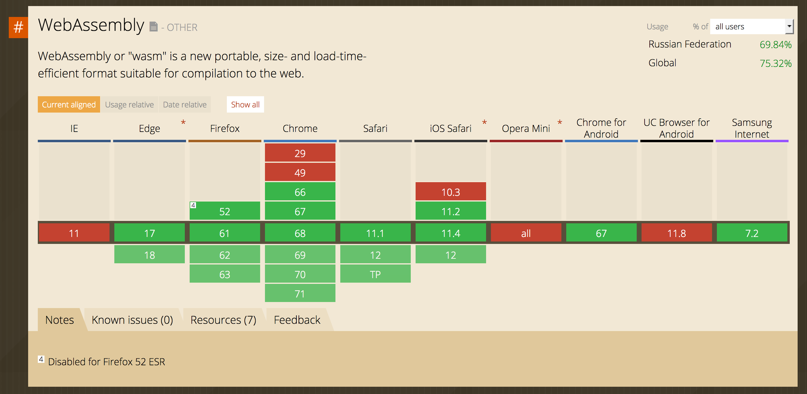
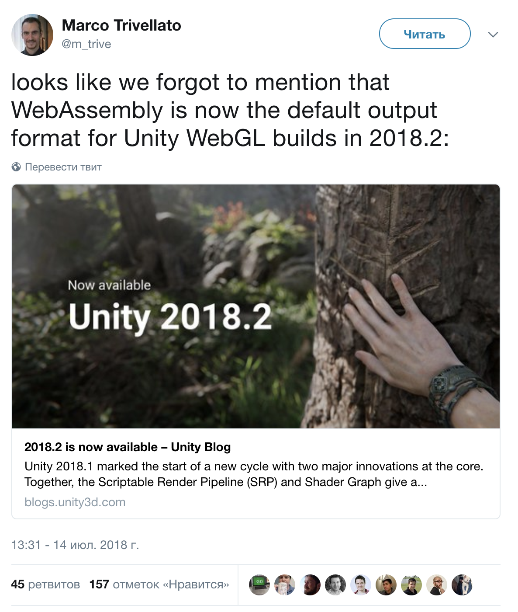
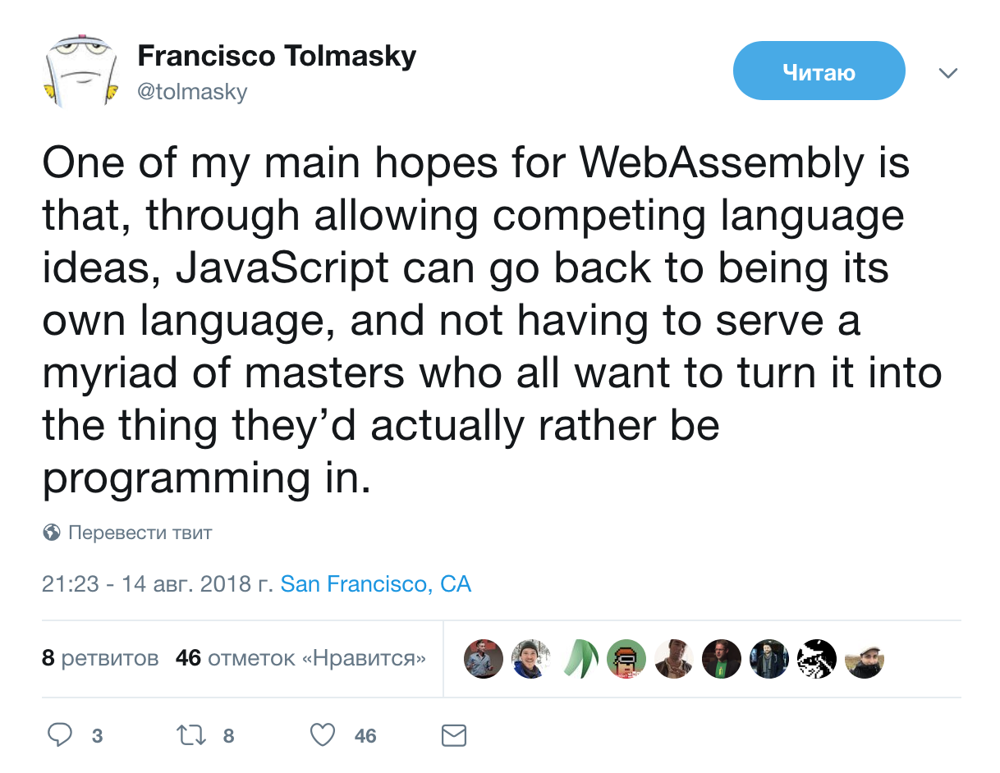

Тим Маринин, 2018, WSD Saint Petersburg
Говорит и показывает Тим Маринин
Программист, делаю подкаст Веб-истории.
@marinintim в твиттере, гитхабе, доткоме.
В свободное время пишу сервис на Rust: seccopy.
Новые слои поверх древнего языка (который становится лучше).
Подмножество JavaScript с кучей ограничений.
— Типы в джаваскрипте до того, как это было модно.
— Память — массив.
function avg(a, b) {a = a|0; // 32-bit intb = b|0;return ((a + b) / 2)|0;}
Можно компилировать C в JS с помощью компилятора Emscripten (основан на LLVM).
LLVM — основа для многих компиляторов, например, Clang.
Можно использовать кучу оптимизаций LLVM!
На выходе — джаваскрипт с определенными гарантиями.
Спецификация виртуальной машины, формат файлов (два: текстовый и бинарный), модель для работы с памятью.
Бинарный формат парсится быстрее, чем asm.js (читай: джаваскрипт).
(module(func $avg (export "avg")(param $p0 i32) (param $p1 i32) (result i32)(i32.div_s(i32.add (get_local $p1)(get_local $p0))(i32.const 2))))
00 61 73 6D 01 00 00 00 01 07 01 60 02 7F 7F 017F 03 02 01 00 07 07 01 03 61 76 67 00 00 0A 0C01 0A 00 20 01 20 00 6A 41 02 6D 0B 00 1A 04 6E61 6D 65 01 06 01 00 03 61 76 67 02 0B 01 00 0200 02 70 30 01 02 70 31
72 байта.


Несмотря на то, что WebAssembly появился в браузере, одна из целей проекта — быть настолько универсальным форматом, чтобы можно было использовать везде.
Уже есть два проекта, которые запускают WebAssembly поверх ядра Linux.
Молодой язык программирования, в который сильно вкладывается Mozilla (в частности, на него переписывают части Firefox; Servo)
Ключевая особенность: необычная система работы с памятью.
Mix of ML and C++ for the modern age.
fn avg(a: i32, b: i32) -> i32 {(a + b) / 2}
Есть инициативная группа, которая разрабатывает инструменты.
Поддержка на уровне компилятора — просто указать другой target
Rust не нужен GC и у него практически нет рантайма.
Приятнее, чем C и C++ для разработки нового кода.
Сейчас в функции WebAssembly можно передавать, по сути, только числа.
Но в джаваскрипте есть доступ к памяти WebAssembly — можем вручную доставать и записывать, что нам нужно.
Тулза для взаимодействия Rust <-> JS
Автоматически генерирует код, который связывает WASM и JS.
#[wasm_bindgen]pub fn avg(a: i32, b: i32) -> i32 {(a + b) / 2}
Используем из JS:
const myModule = import('./mymodule')myModule.then(myModule => {let num = myModule.avg(10, 20)console.log(num) // 15})
Сначала, конечно, нужно измерять.
Game-dev like: считаем в WASM, обновляем UI из JS.
PSPDFKit: 500 000 строк C++
Люди, разрабатывающие Ember, экспериментируют с выносом virtual DOM в WebAssembly.
WebAssembly + обёртка на JS = быстрый инструмент для нас
Сила веб-приложений не в джаваскрипте, а в доступности.
Это не означает, что джаваскрипт не нужен.

Пока только MVP: minimum viable product.
Будет Garbage Collection, взаимодействие напрямую с DOM, треды, etc.